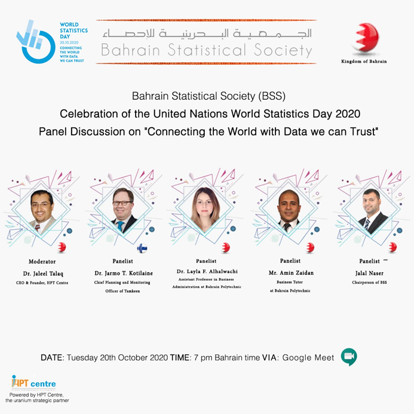
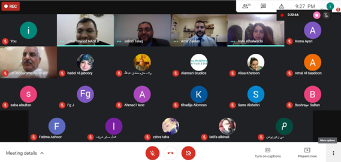

Bahrain Statistical Society (BSS) in collaboration and uranium sponsorship from Human Performance Technology (HPT) center, celebrated the World Statics Day in an online event on the 20th October 2020. The celebration took the form of a panel discussion of shared thoughts on the topic of data. Panel participants present were Dr. Jarmo T. Kotilaine (panelist)-Chief Planning and Monitoring Officer of Tamkeen, Dr. Layla AlHalwachi – Assistant professor in Business Administration from Polytechnic (panelist), Mr. Amin Zaidan Business Tutor from Polytechnic (Panelist), and concluding with Mr. Jalal Naser (Panelist) – BSS Chairperson and a Senior Statistician. The panel discussion moderator was Dr. Jaleel Talaq – CEO and Founder of HPT.
Mr. Jalal Naser -Chairperson, welcomed the audience and panelists and introduced them, and gave the floor to Dr. Jaleel Talaq -Moderator, who introduced the BSS society, gave all a glimpse on the World Statics Day (WSD) history and HPT. The first panellist was Dr. Jarmo T. Kotilaine (from Finland). He addressed “The growing need for a data culture” and the economic and business realities of the Gulf countries and how data has played a pillar role in setting the framework for the changes that were taking place prior to the pandemic and how the pandemic had resulted in the acceleration of implementation of these changes on the economic framework of the GCC countries.
Secondly, the cruciality of data set the tone for Dr. Layal AlHalwachi’s talk was about Trustworthiness and Integrity in Qualitative Research, where she emphasizes the importance of integrity of data in qualitative research and walked through factors that impact credibility and the criteria of data application. Thirdly, Mr. Amir Zaidan brought in the perspective of sustainable development and how data from corporations can be used for the greater good of the public as well as the sustainable development goals of communities in need.
Finally, Mr. Jalal Naser (from Bahrain) delivered a talk titled “Views on Trust in Data: the BSS Way”. He wrapped the need to be data savvy, defined trust in data, highlighted the main elements for trust in data, presented an application of trust in big data analyses on Economic Reforms: The Case of Gulf Cooperation Council Countries recently announced by the World Bank, and being able to understand and provide trust worthy data, concluding a discussion that poured into this year’s WSD slogan “Connecting the World with Data we can Trust”.
Specials thanks to BSS organizing team: Mrs. Alia Alsairafi, Mrs. Fatima Yousif, Mr. Husain Aloraibi and Mrs. Khadija Alomran. Many thanks and appreciations to Linda Hooper the Statistician at the United Nations Statistics Division.
To download the recording of BSS virtual celebration of WSD 2020, click here.
To download the talks delivered by the distinguished panelists as well as their profiles, click here.

The main advertisement of BSS Celebration of the UN World Statistics Day 2020
